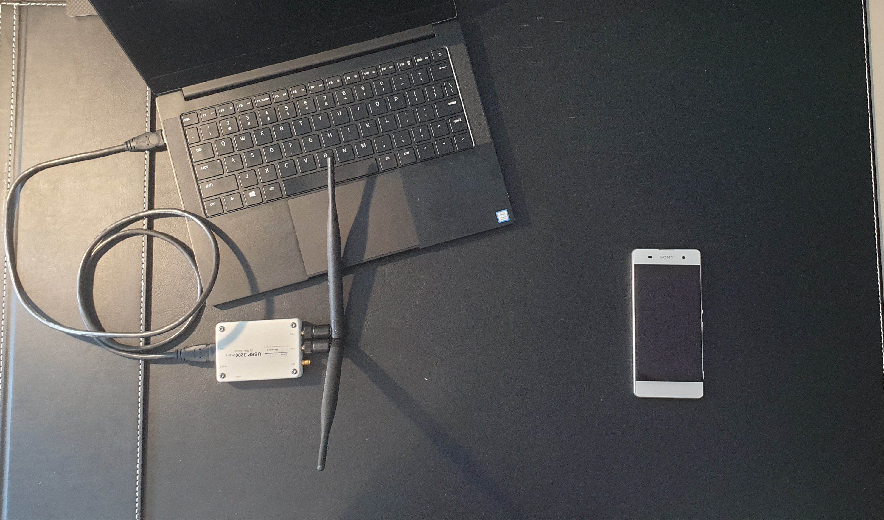

现货 UE
警告
请注意，在蜂窝频段上运行专用 LTE 网络可能会受到您所在辖区的严格监管。在此之前，请先寻求电信监管机构的批准。
简介
本应用笔记旨在演示如何使用 srsENB、srsEPC 和 COTS UE 设置您自己的 LTE 网络。连接 COTS UE 时，有两种网络设置选项： 网络可以保持原样， UE可以在网络内进行本地通信，或者EPC可以通过P-GW连接到互联网，从而使UE可以访问互联网 网页浏览、电子邮件等
所需硬件
创建网络并连接 COTS UE 需要满足以下条件：
具有基于 Linux 操作系统的 PC，已安装并构建 srsRAN 4G
能够进行 Tx 和 Rx 的 RF 前端
现货 UE
USIM/SIM 卡（必须是测试卡或可编程卡，且密钥已知）
下图概述了设置：

对于此实现，使用了以下设备：
运行 Ubuntu 18.04 的 Razer Blade Stealth
B200迷你USRP
配备 Sysmocom USIM 的索尼 Xperia XA
下图显示了该用例的设备的实际实现情况：

请注意，这仅用于说明目的，USRP 和 UE 的这种方向可能无法提供最佳的稳定性和吞吐量。
司机和会议人员文件设置
在实例化网络并连接 UE 之前，您需要首先确保安装了正确的驱动程序并且正确编辑了配置文件。
司机
首先，检查您是否安装了适合 SDR 的驱动程序。如果没有，则必须从相关来源下载它们。如果驱动程序已安装，请确保 它们是最新的并且来自稳定版本。如果您有正确的驱动程序并且知道它们正在工作，则可以跳过此步骤。
RF前端驱动程序：
注意事项
本应用说明使用 b200-mini 和 UHD v4.0 进行测试，但我们建议尽可能使用 UHD v3.15。
安装/更新驱动程序后，您应该连接硬件并检查一切是否正常工作。要使用 UHD 驱动程序对 USRP 执行此操作，请运行以下命令：
uhd_usrp_probe
在执行任何测试或实现以检查与无线电的稳定连接之前，您应该在使用 USRP 时随时执行此操作。请注意，您应该使用 USB 3.0 接口 当针对此用例使用 SDR 时。
如果您必须安装或更新驱动程序并且一切都按预期工作，那么您将需要重建 srsRAN 4G 以确保它能够使用新的/更新的驱动程序。
要进行干净的构建，请在终端中执行以下命令：
cd ./srsRAN_4G/build
rm CMakeCache.txt
make clean
cmake ..
make
您的硬件和驱动程序现在应该可以正常工作，并准备好用于将 COTS UE 连接到 srsRAN 4G。
会议。文件
可以通过在构建文件夹中运行以下命令来安装 srsRAN 4G 的基本配置文件：
sudo srsran_4g_install_configs.sh <user/service>
您可以选择将配置文件安装到用户目录或为所有用户安装。对于此示例，已为所有用户安装了配置文件
运行以下命令 sudo srsran_4g_install_configs.sh service。然后可以在以下文件夹中找到配置文件： ~./etc/srsran_4g
您需要编辑以下文件，然后才能通过网络运行 COTS UE：
EPC配置文件
enb配置文件
用户数据库.csv
需要编辑 eNB 和 EPC 配置文件，以便两个文件中的 MCC 和 MNC 值相同。需要更新用户数据库文件，以便 它包含与 UE 中使用的 USIM 卡关联的凭据。
EPC：
以下代码片段显示了在 EPC 配置文件中更改 MCC 和 MNC 值的位置：
22 | #####################################################################
23 | [mme]
24 | mme_code = 0x1a
25 | mme_group = 0x0001
26 | tac = 0x0007
27 | mcc = 901
28 | mnc = 70
29 | mme_bind_addr = 127.0.1.100
30 | apn = srsapn
31 | dns_addr = 8.8.8.8
32 | encryption_algo = EEA0
33 | integrity_algo = EIA1
34 | paging_timer = 2
35 |
36 | #####################################################################
第 27 行和第 28 行必须更改，对于 Sysmocom USIMS，这些值为 901 和 70。这些值将取决于所使用的 USIM。
基站：
上述更改必须反映在 eNB 配置中。文件。下面的代码片段展示了这一点：
18 | #####################################################################
19 | [enb]
20 | enb_id = 0x19B
21 | mcc = 901
22 | mnc = 70
23 | mme_addr = 127.0.1.100
24 | gtp_bind_addr = 127.0.1.1
25 | s1c_bind_addr = 127.0.1.1
26 | n_prb = 50
27 | #tm = 4
28 | #nof_ports = 2
29 |
30 | #####################################################################
这里，第 21 行和第 22 行的 MCC 和 MNC 值更改为 EPC 中使用的值。
对于这两个配置文件，其余值可以保留默认值。它们可以根据需要进行更改，但可以进一步定制 无需成功连接 COTS UE。
用户数据库：
下面的列表描述了包含在 user_db.csv 文件，可在与 .conf 文件相同的文件夹中找到。作为标准，该文件
将附带输入到 CSV 中的两个虚拟 UE，这些有助于提供如何填写文件的示例。
名称：任何人类可读的值
Auth：认证算法（xor/mil）
IMSI：UE的IMSI值
密钥：UE的密钥，十六进制值
OP Type：操作员代码类型（OP/OPc）
OP：OP/OPc 代码，十六进制值
AMF：认证管理字段，十六进制值必须大于8000
SQN：UE 的验证新鲜度的序列号
QCI：UE 默认承载的 QoS 类标识符
IP Alloc：SPGW 的 IP 分配策略
AMF、SQN、QCI 和 IP Alloc 字段可以填充以下值：
9000, 000000000000, 9, 动态
这将生成一个 user_db.csv 文件，应如下所示：
1 | #
2 | # .csv to store UE's information in HSS
3 | # Kept in the following format: "Name,Auth,IMSI,Key,OP_Type,OP,AMF,SQN,QCI,IP_alloc"
4 | #
5 | # Name: Human readable name to help distinguish UE's. Ignored by the HSS
6 | # IMSI: UE's IMSI value
7 | # Auth: Authentication algorithm used by the UE. Valid algorithms are XOR
8 | # (xor) and MILENAGE (mil)
9 | # Key: UE's key, where other keys are derived from. Stored in hexadecimal
10| # OP_Type: Operator's code type, either OP or OPc
11| # OP/OPc: Operator Code/Cyphered Operator Code, stored in hexadecimal
12| # AMF: Authentication management field, stored in hexadecimal
13| # SQN: UE's Sequence number for freshness of the authentication
14| # QCI: QoS Class Identifier for the UE's default bearer.
15| # IP_alloc: IP allocation stratagy for the SPGW.
16| # With 'dynamic' the SPGW will automatically allocate IPs
17| # With a valid IPv4 (e.g. '172.16.0.2') the UE will have a statically assigned IP.
18| #
19| # Note: Lines starting by '#' are ignored and will be overwritten
20| ue3,mil,901700000020936,4933f9c5a83e5718c52e54066dc78dcf,opc,fc632f97bd249ce0d16ba79e6505d300,9000,0000000060f8,9,dynamic
第 20 行显示 COTS UE 中使用的 USIM 条目。分配给 AMF、SQN、QCI 和 IP Alloc 的值是上面的默认值， 相关内容在 EPC 文档的 配置 CSV 说明 中已有概述。确保每个条目中的值之间没有空格，因为这会导致 文件读取不正确。
添加 APN
UE 需要 APN 才能访问互联网。这是从 UE 创建的，然后对 EPC 配置文件进行更改以反映这一点。
从 UE 导航至正在使用的 SIM 卡的网络设置。从这里可以添加 APN，通常在 “接入点名称”。创建一个新的 APN，名称为“test123”，APN 如下图所示。

此 APN 的添加必须反映在 EPC 配置文件中，为此，请将 APN 添加到配置中。这如下面的代码片段所示：
22 | #####################################################################
23 | [mme]
24 | mme_code = 0x1a
25 | mme_group = 0x0001
26 | tac = 0x0007
27 | mcc = 901
28 | mnc = 70
29 | mme_bind_addr = 127.0.1.100
30 | apn = test123
31 | dns_addr = 8.8.8.8
32 | encryption_algo = EEA0
33 | integrity_algo = EIA1
34 | paging_timer = 2
35 |
36 | #####################################################################
APN 已添加到上面的第 30 行。这必须与 UE 上的 APN 匹配才能成功连接。
运行伪装脚本
要允许 UE 通过 EPC 连接到互联网，必须运行预先配置的伪装脚本。这可以在 srsRAN_4G//srsepc。的
伪装脚本启用 IP 转发并设置网络地址转换以在 srsRAN 4G 网络和外部网络之间传递流量。
每次重新启动计算机时都必须运行该脚本，并且可以在网络运行之前或同时运行。 UE 将无法通信
直到该脚本运行为止。
在运行脚本之前，确定用于将 PC 连接到互联网的接口非常重要。由于脚本要求传递此参数 作为参数。这可以通过运行以下命令来完成：
route
您将看到类似于以下内容的输出：
Kernel IP routing table
Destination Gateway Genmask Flags Metric Ref Use Iface
default 192.168.1.1 0.0.0.0 UG 600 0 0 wlp2s0
link-local 0.0.0.0 255.255.0.0 U 1000 0 0 wlp2s0
192.168.1.0 0.0.0.0 255.255.255.0 U 600 0 0 wlp2s0
与相关的接口 (Iface) 默认 目的地是必须传递到 masq 中的目的地。脚本。上面的输出是 wlp2s0 接口。
面具。现在可以从以下文件夹运行脚本： srsRAN_4G/srsEPC:
sudo ./srsepc_if_masq.sh <interface>
如果执行成功，您将看到以下消息：
Masquerading Interface <interface>
现在应正确设置配置文件、用户 DB 和 UE，以允许 COTS UE 连接到 eNB 和 Core。
将 COTS UE 连接到 srsRAN 4G
将 COTS UE 连接到 srsRAN 4G 的最后一步是首先启动网络，然后从 UE 连接到该网络。以下部分 将概述如何实现这一点。
运行 srsEPC 和 srsENB
首先导航到 srsRAN 4G 文件夹。然后通过运行以下命令初始化 EPC：
sudo srsepc
控制台上应显示以下输出：
Built in Release mode using commit c892ae56b on branch master.
--- Software Radio Systems EPC ---
Reading configuration file /etc/srsran_4g/epc.conf...
HSS Initialized.
MME S11 Initialized
MME GTP-C Initialized
MME Initialized. MCC: 0xf901, MNC: 0xff70
SPGW GTP-U Initialized.
SPGW S11 Initialized.
SP-GW Initialized.
然后可以通过运行以下命令在单独的控制台中使 eNB 联机：
sudo srsenb
控制台应显示以下内容：
--- Software Radio Systems LTE eNodeB ---
Reading configuration file /etc/srsran_4g/enb.conf...
Built in Release mode using commit c892ae56b on branch master.
Opening 1 channels in RF device=UHD with args=default
[INFO] [UHD] linux; GNU C++ version 9.3.0; Boost_107100; UHD_4.0.0.0-666-g676c3a37
[INFO] [LOGGING] Fastpath logging disabled at runtime.
Opening USRP channels=1, args: type=b200,master_clock_rate=23.04e6
[INFO] [B200] Detected Device: B200mini
[INFO] [B200] Operating over USB 3.
[INFO] [B200] Initialize CODEC control...
[INFO] [B200] Initialize Radio control...
[INFO] [B200] Performing register loopback test...
[INFO] [B200] Register loopback test passed
[INFO] [B200] Asking for clock rate 23.040000 MHz...
[INFO] [B200] Actually got clock rate 23.040000 MHz.
Setting frequency: DL=2685.0 Mhz, UL=2565.0 MHz for cc_idx=0
==== eNodeB started ===
Type <t> to view trace
如果 eNB 已成功连接到核心，EPC 控制台现在应该打印更新：
Received S1 Setup Request.
S1 Setup Request - eNB Name: srsenb01, eNB id: 0x19b
S1 Setup Request - MCC:901, MNC:70, PLMN: 651527
S1 Setup Request - TAC 0, B-PLMN 0
S1 Setup Request - Paging DRX v128
Sending S1 Setup Response
网络现已准备好供 COTS UE 连接。
连接UE
如果成功完成上述步骤，则将 UE 连接到网络是一个快速而简单的过程。
您现在可以通过以下步骤将 UE 连接到网络：
打开“设置”菜单并导航至“SIM 和网络”选项

打开此菜单并进入与正在使用的 USIM 关联的子菜单。它应该类似于以下内容：

在网络运营商下找到您刚刚使用 srsRAN 4G 实例化的网络

选择 MMC 和 MNC 值组合的网络。对于本示例，它是标记为 90170 4G 的网络。然后，UE 应自动连接到网络。
UE 现在应该连接到网络。要检查连接是否成功，请使用输出到控制台的日志。
确认连接
UE 连接到网络后，srsENB 和 srsEPC 的控制台输出可用于确认连接成功。
EPC 控制台：
成功连接后，EPC 显示以下输出。首先是一条确认消息，格式为 UL NAS：已收到附加完成 其次将显示 EPS 承载将被给出并在输出上确认 ID，最后 发送 EMM 信息消息 将显示输出。如果所有这些都显示在 日志，则附加成功。这些消息显示在以下控制台输出的最后五行中：
Built in Release mode using commit c892ae56b on branch master.
--- Software Radio Systems EPC ---
Reading configuration file /etc/srsran_4g/epc.conf...
HSS Initialized.
MME S11 Initialized
MME GTP-C Initialized
MME Initialized. MCC: 0xf901, MNC: 0xff70
SPGW GTP-U Initialized.
SPGW S11 Initialized.
SP-GW Initialized.
Received S1 Setup Request.
S1 Setup Request - eNB Name: srsenb01, eNB id: 0x19b
S1 Setup Request - MCC:901, MNC:70, PLMN: 651527
S1 Setup Request - TAC 0, B-PLMN 0
S1 Setup Request - Paging DRX v128
Sending S1 Setup Response
Initial UE message: LIBLTE_MME_MSG_TYPE_ATTACH_REQUEST
Received Initial UE message -- Attach Request
Attach request -- IMSI: 901700000020936
Attach request -- eNB-UE S1AP Id: 1
Attach request -- Attach type: 2
Attach Request -- UE Network Capabilities EEA: 11110000
Attach Request -- UE Network Capabilities EIA: 11110000
Attach Request -- MS Network Capabilities Present: true
PDN Connectivity Request -- EPS Bearer Identity requested: 0
PDN Connectivity Request -- Procedure Transaction Id: 2
PDN Connectivity Request -- ESM Information Transfer requested: true
Downlink NAS: Sending Authentication Request
UL NAS: Authentication Failure
Authentication Failure -- Synchronization Failure
Downlink NAS: Sent Authentication Request
UL NAS: Received Authentication Response
Authentication Response -- IMSI 901700000020936
UE Authentication Accepted.
Generating KeNB with UL NAS COUNT: 0
Downlink NAS: Sending NAS Security Mode Command.
UL NAS: Received Security Mode Complete
Security Mode Command Complete -- IMSI: 901700000020936
Sending ESM information request
UL NAS: Received ESM Information Response
ESM Info: APN srsapn
ESM Info: 6 Protocol Configuration Options
Getting subscription information -- QCI 9
Sending Create Session Request.
Creating Session Response -- IMSI: 901700000020936
Creating Session Response -- MME control TEID: 1
Received GTP-C PDU. Message type: GTPC_MSG_TYPE_CREATE_SESSION_REQUEST
SPGW: Allocated Ctrl TEID 1
SPGW: Allocated User TEID 1
SPGW: Allocate UE IP 192.168.0.2
Received Create Session Response
Create Session Response -- SPGW control TEID 1
Create Session Response -- SPGW S1-U Address: 127.0.1.100
SPGW Allocated IP 192.168.0.2 to IMSI 901700000020936
Adding attach accept to Initial Context Setup Request
Sent Initial Context Setup Request. E-RAB id 5
Received Initial Context Setup Response
E-RAB Context Setup. E-RAB id 5
E-RAB Context -- eNB TEID 0x460003; eNB GTP-U Address 127.0.1.1
UL NAS: Received Attach Complete
Unpacked Attached Complete Message. IMSI 901700000020936
Unpacked Activate Default EPS Bearer message. EPS Bearer id 5
Received GTP-C PDU. Message type: GTPC_MSG_TYPE_MODIFY_BEARER_REQUEST
Sending EMM Information
eNB 控制台：
eNB 控制台还会显示消息以确认连接。一个 RACH 应该看到消息后面跟着一个 用户 0xX 已连接 消息。哪里“0xX” 是代表 UE 的十六进制 ID。
注意，您可能会看到一些其他 RACH 和 断开rtni=0xX 消息。如果您看到 UE 和网络之间有清晰的连接，这可能来自尝试连接到网络的其他设备 这些可以忽略。
以下显示了 eNB 的输出，表明连接成功：
--- Software Radio Systems LTE eNodeB ---
Reading configuration file /etc/srsran_4g/enb.conf...
Built in Release mode using commit c892ae56b on branch master.
Opening 1 channels in RF device=UHD with args=default
[INFO] [UHD] linux; GNU C++ version 9.3.0; Boost_107100; UHD_4.0.0.0-666-g676c3a37
[INFO] [LOGGING] Fastpath logging disabled at runtime.
Opening USRP channels=1, args: type=b200,master_clock_rate=23.04e6
[INFO] [B200] Detected Device: B200mini
[INFO] [B200] Operating over USB 3.
[INFO] [B200] Initialize CODEC control...
[INFO] [B200] Initialize Radio control...
[INFO] [B200] Performing register loopback test...
[INFO] [B200] Register loopback test passed
[INFO] [B200] Asking for clock rate 23.040000 MHz...
[INFO] [B200] Actually got clock rate 23.040000 MHz.
Setting frequency: DL=2685.0 Mhz, UL=2565.0 MHz for cc_idx=0
==== eNodeB started ===
Type <t> to view trace
RACH: tti=521, preamble=44, offset=1, temp_crnti=0x46
User 0x46 connected
UE 现已连接到网络。现在每次开机时都应该自动连接到该网络。您应该将 UE 保持在飞行模式，直到您想要将其连接到网络。 UE 现在还应该可以访问互联网 - 就像连接到商业 4G 网络一样。
故障排除
如果手机无法找到网络或无法保持连接，可能是由于时钟不准确导致 eNB 信号的频移和漂移造成的。 因此，我们始终建议 eNB 使用外部 10 MHz 参考时钟或 GPSDO 标准时钟。
即使运行伪装脚本后，某些用户也可能会遇到连接互联网的问题。确保已启用 IP 转发，并检查您的网络配置，因为这可能会阻止 UE 成功连接。
用户也可能在连接网络时遇到问题。首先检查配置和用户数据库文件中的所有信息是否正确。您可能还需要调整 eNB 配置中的增益参数。文件 - 没有足够高的功率（pmax 阈值），UE 将无法 PRACH。
请注意，某些 USIM 卡可能与“锁定”某些网络运营商的 UE 不兼容。